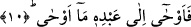

yayın kabzâsı kiriş kısmına üstün kılınarak yakınlığı te’kîd murad edilmiştir.
Bu ölçü hikâyesinin aslı şudur: Müttefik olan araplar câhiliyye döneminde bir
dürüstlük ve güven anlaşması yapacakları zaman iki yay çıkarır, birbirlerini
destekleyeceklerine ve himâye edeceklerine delâlet etmesi için bir yayı diğerinin
üzerine koyarak iki yayı birleştirirlerdi.
Bir kavle göre de bu “kâb-ı kavseyn” iki arşın miktarıdır. Zirânın yay olarak
isimlendirilmesinin sebebi ise kendisiyle mesâfenin ölçülmesi; yâni miktarının
belirlenmesi hasebiyledir. Cibrîl (a.s.)’ın Nebî (a.s.)’a mesâfesi; ne çok yapışık, ne de
çok uzak bir konumda idi. Sadece teeddüp sâhibi ahbabların sohbet ederken bilinen
ölçüde, ifâde etme ve istifâdede bulunmayı anlatmak içindi.
“Hatta daha da yakın oldu.” Yâni ey muhatablar! Sizin takdir ettiğiniz mesafeden
daha da yakın oldu. Bir âyet-i kerîmede de; “Ya da daha fazla olanlara” (es-Saffât,
37/147) tarzında geçmektedir. Bu âyet-i kerîmede şüpheye düşürmek yoktur. Zaten bu
Allah için sahih değildir. “Ev ednâ”daki “ev” kullar cihetinden bir şüpheyi ifâde eder.
Nitekim Kur’ân-ı Kerîm’in pek çok yerinde “lealle” kelimesinde de bu söz konusudur.
O halde bu âyetin mânâsı; “Şâyet sizden biriniz Cibrîl ve Peygamber (a.s.)’ı bu halde
görse onların yakınlığı hakkında: “iki yay mesafesi kadar veya daha yakın bir
uzaklıktalar” derdi” takdirindedir. Yâni onların birbirlerine yakınlığında tereddüd
ederdi. “Sümme denâ”dan “ev ednâ”ya kadar ki bu iki ihtimalli anlatım, ifâdenin temsîlî
olduğunu hatırlatmak ve Peygamber (a.s.)’ın vahyi işitmesini, şüphe duyulan uzaklığın
olmadığını ifâde içindir. Bazı âlimler ise bu olayın hakikati üzerinde durarak: “Cibrîl
(a.s.) Peygamber (s.a.)’e her yaklaştığında bu mesafe gittikçe azalmaktadır. Cibrîl (a.s.)
peygambere iki yay uzunluğu kadar yaklaştığı zaman Peygamber (a.s.) onu diğer
vakitlerdeki gördüğü hakîkî sûretinde görmüş ve onun Cibrîl olduğunda şüphe
duymamıştır” demişlerdir. Bu hususta âyetlerin bitiminden sonra gelecek diğer bir
kelâm daha vardır.
10. Bunun üzerine Allah, kuluna vahyini bildirdi.
“Bunun üzerine” Cebrâil (a.s.) Allah Teâlâ’nın “kuluna vahyini bildirdi.” Allah
isminin yerine zamirin getirilmesinin maksadı, bu ismin son derece açık olmasındandır.
Nitekim “Yeryüzünde hiçbir canlı bırakmazdı” (Fâtır, 35/45) âyetinde de böyledir.
Allah Teâlâ’nın yanında zikredip de şerefli kılınan abd, Rasûlullah (s.a.)’dır. “Bir gece
kulunu götüren Allah her şeyden yücedir” (el-İsra, 17/1) âyetindeki “mâ evhâ =
vahyetti” ile Rasûlullah kasdedilmiştir. Kuluna vahyetmek istediği şeyleri vahyetti.
Yahut Allah Teâlâ o zaman Cibrîl (a.s.) aracılığı ile vahyini iletti.